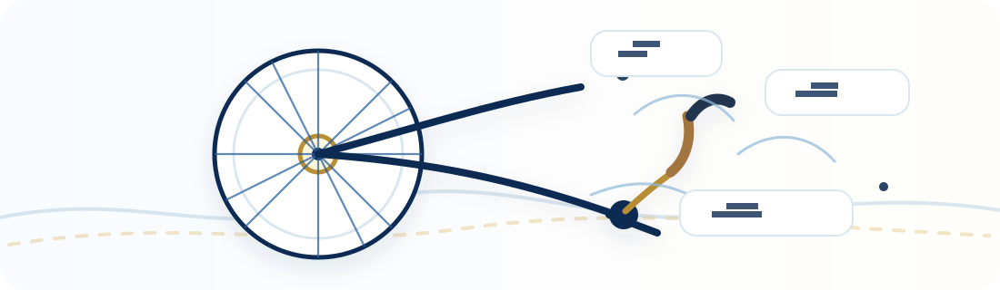

Start here if the Resource Hub feels new or unfamiliar.

What is a hub?
A hub is the central part of a wheel where the spokes connect. The word can also mean a center of activity or focal point.
That is the idea here: one central place that helps you connect to different learning, language, digital-skills, career, study, and entrepreneurship paths.
Definition source: Merriam-Webster.
How to use this hub without feeling overwhelmed.
This hub is not a course by itself. It is a guide that brings useful learning, career, language, digital-skills, entrepreneurship, and opportunity resources into one place so you can choose one realistic next step.
One simple rule
Do not try to understand the whole directory at once. Choose one goal, open one useful resource, save it, and check the official provider page.
Why this hub matters
This hub helps people discover resources they may not know exist: free or low-cost courses, language tools, digital-skills platforms, career resources, study pathways, entrepreneurship resources, and current opportunities.
It is especially useful if you know you want to learn or grow, but you are not sure where to start.
Choose one path
Pick the topic closest to your goal: language, digital skills, career, study, entrepreneurship, AI/technology, or current opportunities.
Use the guide or filters
The 30-second guide and filters narrow the directory. They are tools to help you start, not tests you can fail.
Save useful resources
Save two or three options so you can come back later, copy the list, email it to yourself, or download it.
Act on the official page
This hub points you toward resources. The official provider page is where you confirm deadlines, cost, eligibility, certificates, and registration.
If nothing appears for your island or topic
That does not mean there are no opportunities for you. Some resources are local, but many are online, Cabo Verde-wide, or usable from anywhere.
- Try All locations instead of one island.
- Remove strict filters like cost, role, or availability.
- Look for Trusted Gateways such as Class Central, GCFGlobal, DigitalLearn, Khan Academy, Microsoft Learn, Cisco, IBM SkillsBuild, and similar platforms.
Why gateway platforms matter
Some large learning platforms contain many more courses than this hub can list one by one. This hub may list the platform and a few examples, then encourage you to search the official site directly.
Example: a business or entrepreneurship learner in Santiago may not see a local in-person listing, but online platforms may still offer useful courses, tutorials, certificates, or learning paths.
Example: Santiago + entrepreneurship
Search results may include local Cabo Verde resources, but they should also show online or gateway resources when relevant. If results are too narrow, choose All locations, remove Open now, or search terms like business, entrepreneurship, marketing, or digital skills.
Example: language foundations
If a course feels too advanced, start with Language Foundations. Beginner resources can help you build confidence before harder career, university, tourism, or digital-skills training.
Translation and accessibility
Use the Translate button to open a Google-translated copy of the page. Automatic translation may not be perfect, but it can make the hub easier to explore.
Saved resources may be separate between the original page, translated page, different browsers, or different devices. Before switching, copy, email, or download your saved list.
What this hub is not
- It is not an official provider or enrollment platform.
- It does not guarantee admission, jobs, scholarships, certificates, funding, or approval.
- Information can change. Always check the official source.
Want a walkthrough?
Short screen-recorded examples can be added later, such as “How to find a beginner English resource,” “How to search Class Central,” or “How to save and export resources.”
For now, start with the guide and choose one next step.